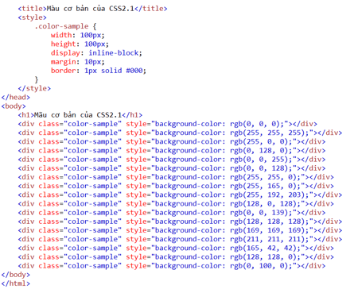
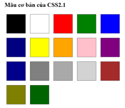

- Đen: RGB(0, 0, 0)
- Trắng: RGB(255, 255, 255)
- Đỏ: RGB(255, 0, 0)
- Xanh lá cây: RGB(0, 128, 0)
- Xanh da trời: RGB(0, 0, 255)
- Xanh lam: RGB(0, 0, 128)
- Vàng: RGB(255, 255, 0)
- Cam: RGB(255, 165, 0)
- Hồng: RGB(255, 192, 203)
- Tím: RGB(128, 0, 128)
- Xanh dương: RGB(0, 0, 139)
- Xám: RGB(128, 128, 128)
- Xám đậm: RGB(169, 169, 169)
- Xám nhạt: RGB(211, 211, 211)
- Nâu: RGB(165, 42, 42)
- Xanh oliv: RGB(128, 128, 0)
- Xanh lá cây đậm: RGB(0, 100, 0)
Mã HTML:
Kết quả hiển thị của các màu tương ứng:
Các mẫu định dạng E F và E > F trong CSS có tác dụng như nhau trong trường hợp sau: Khi phần tử F là con trực tiếp của phần tử E. Trong trường hợp này, cả hai mẫu đều áp dụng cho phần tử F nằm trong phần tử E. Điều này có nghĩa là phần tử F phải là con trực tiếp của phần tử E và không được chứa trong bất kỳ phần tử con nào khác.
a) Mẫu định dạng E + F + G: Đây là một mẫu kết hợp (adjacent sibling combinator) trong CSS, áp dụng cho các phần tử G là anh em kế tiếp của phần tử F, và phần tử F là anh em kế tiếp của phần tử E. Mẫu này yêu cầu F và G nằm trực tiếp sau E và cùng nằm trong cùng một cấp độ của cây phân cấp.
b) Mẫu định dạng E > F + G: Đây là một mẫu kết hợp (child combinator và adjacent sibling combinator) trong CSS, áp dụng cho các phần tử G là anh em kế tiếp của phần tử F, và phần tử F là con trực tiếp của phần tử E. Mẫu này yêu cầu F và G nằm trực tiếp sau E và cùng nằm trong cùng một cấp độ của cây phân cấp.